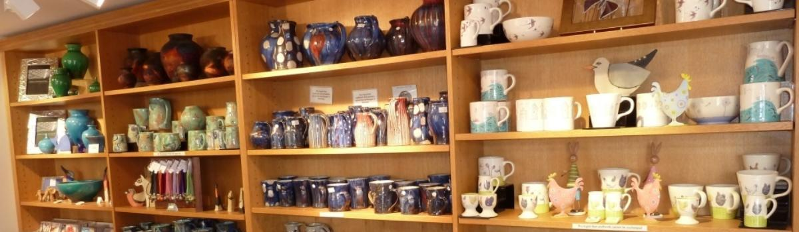
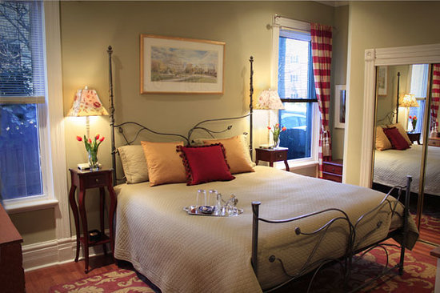

Chollerton Tearooms is located in the hamlet of Chollerton, within the beautiful North Tyne Valley. People from all over the UK travel here for day trips and weekend getaways. You are guaranteed to have a great time so why not find out more? Read further for more information or click the Find Out More link on the left side of the page.
Chollerton Tearooms has a variety of activities which you may participate in. For example, we have a large tearoom with an always great atmosphere. Images of this can be seen above! This tearoom has been around for over 50 years and has had multiple redevelopments to please our customers. We are also proud to announce that we are the winners of the best Tea shop in Tyne and Wear 2017.
We also have a world class craft shop. Here you can come down for the day and use your imagination to create scrapbooks or paint pottery. We have a team of assistants which can help you out as well as hundreds of materials and props to ensure you have all that you need when you let your imagination run wild!
If you fancy staying more than just a day, we have a bed and breakfast facility which is newly refurbished. We have a range of different rooms and great breakfast options which is guaranteed to please all.
